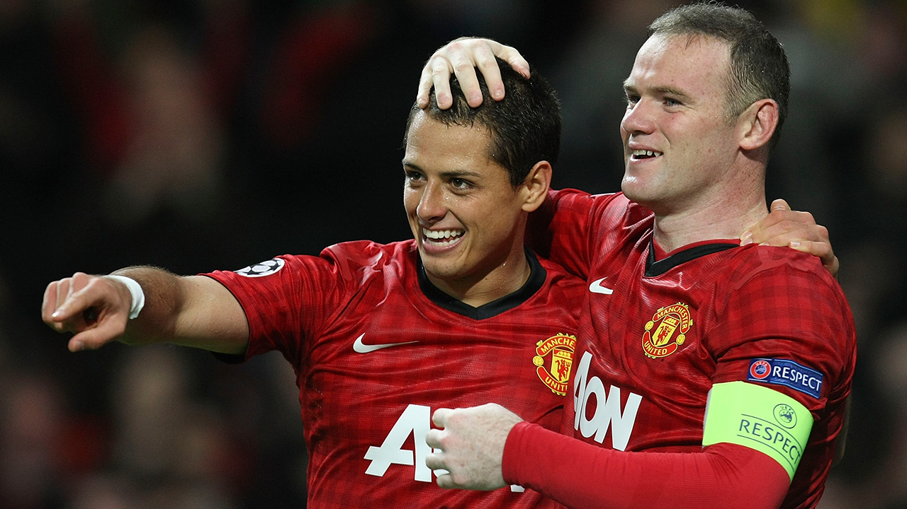

Wayne Rooney quiere llevar a Chicharito al DC United

El futbolista de Inglaterra de 33 años, Wayne Rooney, quien actualmente milita en la Major League Soccer en el DC United, indicó que le gustaría volver a compartir cancha con el delantero mexicano, Javier ‘Chicharito’ Hernández, quien actualmente milita en la Premier League con el West Ham United, es decir que le gustaría repetir lo vivido cuando ambos eran jugadores del Manchester United.El inglés no titubeó al alabar al delantero azteca, con quien compartió cancha e indicó; “’Chicha’ es un jugador fantástico, una persona maravillosa y si viniera a la MLS por supuesto que lo querría en mi equipo”, dijo en una entrevista para la cadena ESPN, con lo que ha realizado un guiño directo para Hernández.

Rooney y Hernández Balcázar coincidieron en el Manchester United y estuvieron juntos por cuatro temporadas. Ambos tuvieron un gran entendimiento desde que el mexicano arribó al futbol de Europa en el 2010 y estuvieron bajo la batuta de entrenadores de la talla de Alex Ferguson, David Moyes y Ryan Giggs.De igual forma, en varias ocasiones, equipos de la MLS se han acercado a preguntar por el atacante azteca y ha sonado en varios mercados para llegar a equipos como Los Angeles FC, Colorado Rapids, Real Salt Lake, Columbus Crew e incluso el mismo DC United donde milita Rooney.